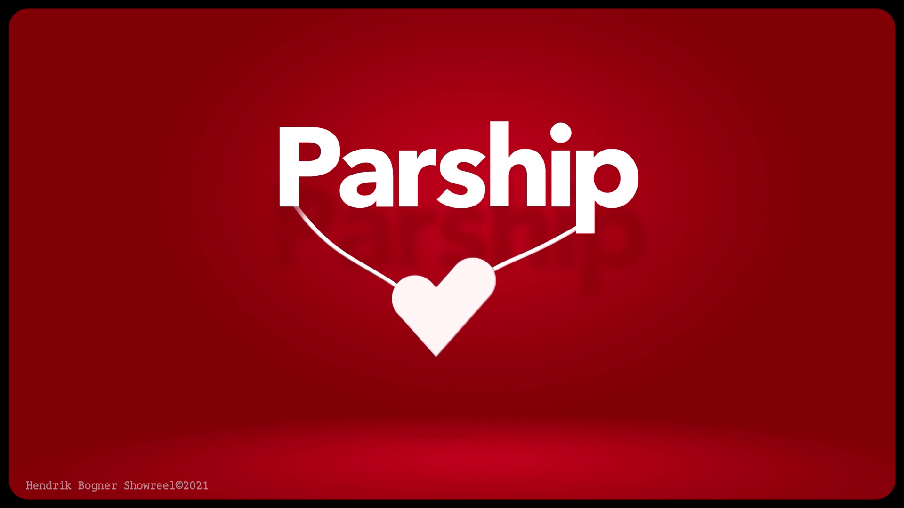
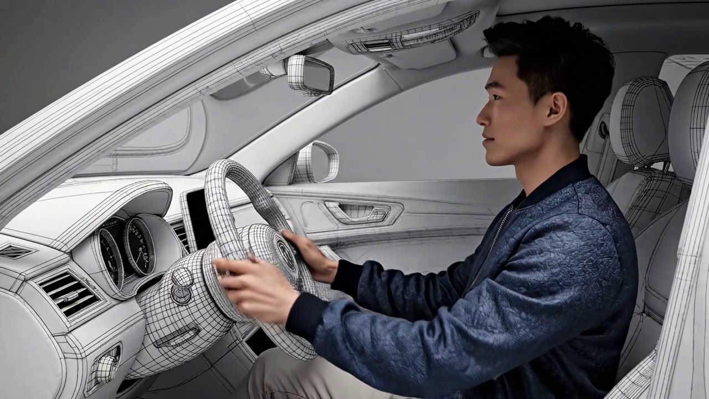
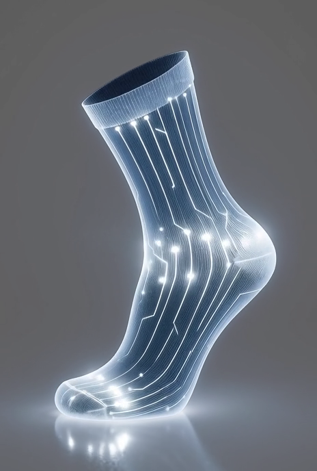

Projekte Hendrik Bogner
Strategie sichtbar machen.
Strategie sichtbar machen.
Wirkung beweisen.
Die Snippets geben Ihnen einen aktuellen Einblick in meine laufenden Projekte – sie werden regelmäßig ergänzt. Wenn Sie mehr zu Zielen, Prozessen oder Entscheidungen erfahren möchten, teile ich Details gern mit Ihnen persönlich, zum Beispiel in einem kurzen Termin.

1 / 3

2 / 3

3 / 3
Zusammen was zusammen gehört
Drei Szenen, eine Vision.
"Marken machen sichtbar.
Identität macht unverwechselbar."
— Hendrik Bogner

© Hendrik Bogner – Urheber- und Designrechte.
Motion Story
Strategien für eine sichere Zukunft
- Kundenauftrag
"Fortschritt zeigt, was möglich ist.
Marke zeigt, wer wir sind."
— Hendrik Bogner

Pure Emotion
Authentische Momente
17 ...
... kreative Projekte in der Pipeline
Jeden Montag eine einzigartige Geschichte von Vision und Ausführung.

© Hendrik Bogner – Urheber- und Designrechte.
Mit der Zeit gehen
Aus diesem Alltagsobjekt entwickelt das Unternehmen Hightech-Ikonen.
Kundenauftrag
BOLD
MOVES
Mutige Schritte für außergewöhnliche Ergebnisse.
Schnell & Dynamisch
Performance trifft auf elegantes Design. Alles läuft flüssig und reaktionsschnell.

Visual Poetry
Wo Farbe auf Emotion trifft und Bewegung zur Kunst wird.
AI -Character-Design
Tiefe entsteht durch Schichten. Jede Ebene erzählt ihre eigene Geschichte.


Nature Series
Zwei Welten, eine Vision
"Produkte sind das Was.
Marken das Wie.
Identität das Warum."
— Hendrik Bogner
Motion • Slider
Video Kaleidoskop
Zwei Perspektiven, ein dynamisches Narrativ – ready für Socials und Pitch-Deck.
Micro Showcase
Video + Slider Combo
Ein Raster für schnelle Swipes: Reel, Still und ein Call-to-Action.
Reel
CTA
Jetzt Motion buchen
Ein Klick, und die Story läuft.
Gallery Stack
Schnell & Dynamisch
Zwei starke Frames als Duo, um Lücken im Grid gezielt zu schließen.
"Ideen brauchen Bühne.
Marken geben Richtung.
Momentum entsteht im Zusammenspiel."
— CX-17
"Mutig denken, klar gestalten."
— CX-17
Auf der Suche nach einem großen Gedanken der Unternehmen inspiriert und Kunden fasziniert?
Kontaktieren Sie mich auf LinkedIn und lassen Sie uns gemeinsam Ihre nächsten Erfolge gestalten.